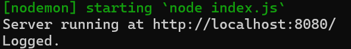
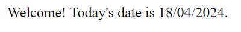

Middleware and Routing
index.js
// Importing the 'express' module
const express = require('express');
// Creating an Express application
const app = express();
const dater = require('./dater');
const logger = require('./logger');
const info = require('./routes/apiInfo');
app.use(dater);
app.use('/api/info',info);
// Handling GET request to the landing page with the logger and dater middleware
app.get('/', logger, dater, (req, res) => {
res.status(200).send(`Welcome! Today's date is ${req.formattedToday}.`);
res.end;
});
// Starting the server
app.listen(8080, () => {
console.log(`Server running at http://localhost:8080/`);
});
This is my server code. This code is using middleware from external sources
Middleware
dater.js
// JavaScript Document
//dater function
const dater = (req, res, next) => {
const today = new Date();
const yyyy = today.getFullYear(); //get year
let mm = today.getMonth() + 1; // adds 1 because index starts at 0
let dd = today.getDate(); //gets date
if (dd < 10) dd = '0' + dd; //puts 0 at the beginning if its jan-oct
if (mm < 10) mm = '0' + mm; // puts 0 at the beginning if its 1-9
//cannot send variable directly, therefore a request rather than a var.
req.formattedToday = dd + '/' + mm + '/' + yyyy;
//moves to next middleware
next();
};
module.exports = dater;
logger.js
// JavaScript Document
const logger = (req, res, next) => {
console.log("Logged.");
next();
};
module.exports = logger;
These are my middleware. My logger just sends text to the console, while my dater sends the current date to the webpage and displays it
Routing
apiInfoCon.js
const { items } = require('../../data');
// Callback function for /api/info
const getInfo = (req, res) => {
res.status(200).json({ items });
};
// Callback function for /api/info/:id
const selectSingle = (req, res) => {
const { id } = req.params;
const singleItem = items.find((item) => item.id === Number(id));
res.json(singleItem);
};
module.exports = { getInfo, selectSingle };
This is my controller. It creates callback functions that my router below calls.
apiInfo.js
const express = require('express');
const router = express.Router();
const { getInfo, selectSingle } = require('./controllers/apiInfoCon');
// api/info routing
router.get('/', getInfo);
// api/info routing with ID
router.get('/:id', selectSingle);
module.exports = router;
data.js
const items = [
{
id: 1,
name: 'paper',
common: 1,
strength: 'rock',
weakness: 'scissors',
fingers: 5,
elem: 'wood',
desc: 'A flat material best used for wrapping opponents.',
},
{
id: 2,
name: 'rock',
common: 1,
strength: 'scissors',
weakness: 'paper',
fingers: 0,
elem: 'earth',
desc: 'A bulky object capable of crushing but not piercing.',
},
{
id: 3,
name: 'scissors',
common: 1,
strength: 'paper',
weakness: 'rock',
fingers: 2,
elem: 'metal',
desc: 'A very sharp tool capable of slicing fibers.',
},
{
id: 4,
name: 'cleaver',
common: 2,
strength: 'paper',
weakness: 'rock',
fingers: 4,
elem: 'metal',
desc: 'A heavy, bladed weapon meant for slicing.'
}
]
module.exports = {items}
This code is routing my data file. Essentially, these are looking for my slug, in this case /api/info, and if you were to put a / and number after info it would find the ID and display it.
Information Display
Middleware
